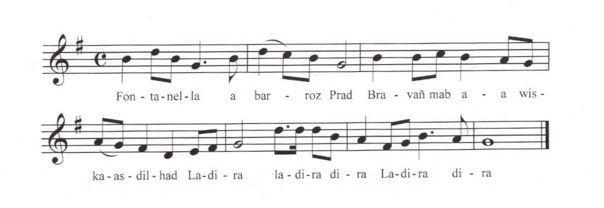

|
VERSION "Yvonne Détente" I 1.1 Fontanella a barroz Prad Bravañ mab a wiskas dilhad. Ladira ladiradira Ladira dira. 1.2 En deus lemmet ur bennhêrez Diwar varlenn he magerez. Fontanella a lavare e-barzh an hent glas pa n'arrie: 2.1 « Merc'hig vihan din a leret Petra deus ar c'hleuz-se a glasket ? » 2.2 « Me a zo o klask bokejoù hañv D'am breur mager a zo klañv. 3.2 Met aon am eus ken a grenan Ec'h arrife ganin Fontanella !» 4.1 « Merc'hig vihan din a leret Petra dioutañ ho-peus klevet ? » 5.2 - Netra dioutañ n'em eus klevet 5.3 Met e oa un debocher merc'hed, Met e oa un debocher merc'hed, 5.4 Ispisial pennhêrezed ! » Fontanella pa 'n deus klevet Da c'hoarzhin a zo komañset. 6.3 Ha war gein e varc'h en deus he lakaet 7.2 Hag d'al leandi en deus he c'haset. Seizh vloaz eo bet el leandi Hag eizh vloaz e oa pa oa aet di. 7.3 Pa oa he femzeg vloaz achuet 7.4 Ec'h int dimezet hag eureujet. II Fontanella a lavare D'e wreg yaouank diouzh ar beure : 9.4 « Ret e vo din monet da Baris Da gomz deus ar roue Louis. » 10.1 « Evit da Baris te ne n'i ket 10.2 Mesajerien a vo kaset. » - Mesajerien am eus kaset Hini anezhe n'a zo retornet Hini anezhe n'a zo retornet 11.2 Me ma unan a renk monet. » En Paris pa c'h eo arriet D'ar prizon eñ a zo kaset D'ar prizon eñ a zo kaset Da sujet da vezañ distrujet. Ar bennhêrez a lavare En palez d'ar Roue pa' n arrie : - Sir ar Roue ma eskuzet Me a zo deuet yaouank mat d'ho kwelet. » Petra a nevez ho peus klevet Ma oc'h deuet ken yaouank d'am gwelet ? » Ur c'heloù trist am eus klevet E vije Fontanella distrujet ! Ma vez Fontanella distrujet C'hwenn en ho loeroù ne vanko ket ! Ma vez Fontanella distrujet An arme a zo mobilizet ! » Ar Rouanez pa deus klevet D'ar bennhêrez he deus lâret : - Kaez te buan er-maez ma zi Rak dismegans bras a rez din ! » Rouanez me ac'h ay er-maez ho ti N'eus nemet un diner en tu-hont din ! Ya, formet am eus un arme Da reiñ ar brezel d'ar Roue ! » Ar Roue Louis p'en deus klevet D'ar bennhêrez en deus lâret : « Itron yaouank en em gonsolet Et d'ar prizon da gerc'hat ho pried. Et dar prizon da gerc'hat ho pried, Fontanella ne vo ket distrujet ! » Fontanella a lavare E-barzh en parroz Prad p'an arrie : « Bennozh Doue a c'houlennan War ar merc'hed eus ar vro-mañ ! Ispisial ar pennhêrezed, Panevet hi oan distrujet ! » Les n° renvoient aux couplets de Barzhaz |
TRADUCTION FRANCAISE I La Fontenelle de la paroisse de Prat Le plus beau gars à porter des habits Ladira ladiradira Ladira dira A enlevé une héritière Des genoux de sa nourrice. La Fontenelle disait En arrivant dans le chemin vert : « Petite fillette, dites-moi, Que cherchez-vous sur ce talus ? » « Je cherche des primevères Pour mon frère de lait qui est malade Mais j'ai si peur, et j'en tremble, Que La Fontenelle ne me surprenne ! » « Dites-moi, petite fillette, Qu'avez-vous entendu à son propos ? » « Je n'ai rien entendu à son propos Si ce n'est qu'il débauchait les filles. Si ce n'est qu'il débauchait les filles, Particulièrement les héritières ! » Quand La Fontenelle a entendu Il s'est mis à rire. Il l'a mise sur le dos de son cheval Et l'a conduite au couvent. Elle est restée sept ans au couvent Et elle avait huit ans quand elle y alla. Quand elle eut quinze ans révolus Ils se sont mariés. II La Fontenelle disait Un matin à sa jeune femme : « Il me faudra aller à Paris Pour parler au roi Louis. » « À Paris tu n'iras pas On enverra des messagers. » « J'ai envoyé des messagers, Aucun d'entre eux n'est revenu. Aucun d'eux n'est revenu, Je dois y aller moi-même. » Quand il est arrivé à Paris, On l'a conduit en prison. On l'a conduit en prison Afin d'être exécuté. L'héritière disait Quand elle arrivait au palais du roi : « Sire le roi, excusez-moi, Je suis venue très jeune pour vous voir. » « Qu'avez-vous entendu de neuf Pour être venue si jeune me voir ? » « J'ai entendu une triste nouvelle : La Fontenelle serait exécuté ! Si La Fontenelle est exécuté II ne manquera pas de puces dans vos bas ! Si La Fontenelle est exécuté L'armée est mobilisée ! » Quand la reine a entendu Elle a dit à l'héritière : « Va-t-en vite hors de ma maison Car tu me fais un grand affront ! » « Reine, je sortirai de votre maison Mais vous ne me dépassez que d'un denier. Oui, j'ai formé une armée Pour faire la guerre au roi ! » Quand le roi Louis a entendu Il a dit à l'héritière : « Consolez-vous, jeune dame, Allez à la prison chercher votre époux. Allez à la prison chercher votre époux, La Fontenelle ne sera pas exécuté ! » La Fontenelle disait En arrivant dans la paroisse de Prat : « Je demande la bénédiction de Dieu Sur les filles de ce pays ! Particulièrement les héritières, Sans elle j'étais exécuté ! » Traduction: Eva Guillorel |
ENGLISH TRANSLATION I 1.1 La Fontenelle from parish Prad, In his garment the handsomest lad, Ladira ladiradira Ladira dira 1.2 Was so shameless as to kidnap An heiress from her nurse's lap. La Fontanelle said on that day Encountering her on his way: 2.1 - Little girl, sitting on the floor, What is it you are looking for? 2.2 - I'm picking flowers on the hill: My foster-brother is so ill. 3.2 But I quiver and quake for fear Lest La Fontanelle could appear! 4.1 - My little girl, that sounds so grim! What is it you heard about him? 5.2 - About him much good is not said: 5.3 He is a danger to each maid! A danger for girls, big and small, 5.4 And for heiresses above all! - When he listened to her babbling, La Fontenelle burst out laughing. 6.3 Swung her on his horse's pillion 7.2 And to a convent he rode on. For seven years there she has stayed. She was eight when the trick was played. 7.3 The day she was fifteen years old 7.4 As to wed her he was so bold. II La Fontenelle was a-telling His young wife, early that morning: 9.4 - I am summoned to Paris To the palace of King Louis. 10.1 - To Paris you won't go, will you? 10.2 Send a messenger: that will do. - Messengers I sent already, None returned: makes me unsteady. None of them returned, my dear elf! 11.2 So I think I must go, myself. - When he arrived in Paris town To a prison he was sent down He was sent down to a prison In wait of his execution. The heiress to Paris repaired In the king's palace she has said: - I may be young, your Majesty, My move is not overhasty. - What news has set up you so much That with me you must get in touch? News that causes much affliction: La Fontanelle's execution! - La Fontenelle's fate now is sealed. Of this flea bite you can't be healed! - If La Fontenelle's head is to fall To combat you we shall rise all! - The queen was present and heard it. To the heiress she declared: - O Satan, get thee behind me! You're insulting, as all can see! - Queen, I am leaving from your house But I am terrible when roused! Yes, I have levied an army To wage war on your Majesty! - The king Louis had heard as well And here is what he had to tell: - Young lady, be quiet: Leave this house, Go to the jail and fetch your spouse! To fetch your spouse, go to the jail We shan't behead La Fontenelle! - So that La Fontenelle has said On arriving in parish Prad: - I call God the Lord's fond blessing On all girls that are here living! A special one on the heiress, Who did preserve me from distress! - Translated by Christian Souchon (c) 2012 |